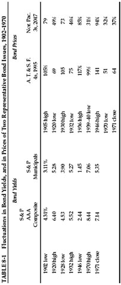

T o the extent that the investor’s funds are placed in high-grade bonds of relatively short maturity—say, of seven years or less—he will not be affected significantly by changes in market prices and need not take them into account. (This applies also to his holdings of U.S. savings bonds, which he can always turn in at his cost price or more.) His longer-term bonds may have relatively wide price swings during their lifetimes, and his common-stock portfolio is almost certain to fluctuate in value over any period of several years.
The investor should know about these possibilities and should be prepared for them both financially and psychologically. He will want to benefit from changes in market levels—certainly through an advance in the value of his stock holdings as time goes on, and perhaps also by making purchases and sales at advantageous prices. This interest on his part is inevitable, and legitimate enough. But it involves the very real danger that it will lead him into speculative attitudes and activities. It is easy for us to tell you not to speculate; the hard thing will be for you to follow this advice. Let us repeat what we said at the outset: If you want to speculate do so with your eyes open, knowing that you will probably lose money in the end; be sure to limit the amount at risk and to separate it completely from your investment program.
We shall deal first with the more important subject of price changes in common stocks, and pass later to the area of bonds. In Chapter 3 we supplied a historical survey of the stock market’s action over the past hundred years. In this section we shall return to that material from time to time, in order to see what the past record promises the investor—in either the form of long-term appreciation of a portfolio held relatively unchanged through successive rises and declines, or in the possibilities of buying near bear-market lows and selling not too far below bull-market highs.
Market Fluctuations as a Guide to Investment Decisions
Since common stocks, even of investment grade, are subject to recurrent and wide fluctuations in their prices, the intelligent investor should be interested in the possibilities of profiting from these pendulum swings. There are two possible ways by which he may try to do this: the way of timing and the way of pricing. By timing we mean the endeavor to anticipate the action of the stock market—to buy or hold when the future course is deemed to be upward, to sell or refrain from buying when the course is downward. By pricing we mean the endeavor to buy stocks when they are quoted below their fair value and to sell them when they rise above such value. A less ambitious form of pricing is the simple effort to make sure that when you buy you do not pay too much for your stocks. This may suffice for the defensive investor, whose emphasis is on long-pull holding; but as such it represents an essential minimum of attention to market levels. 1
We are convinced that the intelligent investor can derive satisfactory results from pricing of either type. We are equally sure that if he places his emphasis on timing, in the sense of forecasting, he will end up as a speculator and with a speculator’s financial results. This distinction may seem rather tenuous to the layman, and it is not commonly accepted on Wall Street. As a matter of business practice, or perhaps of thoroughgoing conviction, the stock brokers and the investment services seem wedded to the principle that both investors and speculators in common stocks should devote careful attention to market forecasts.
The farther one gets from Wall Street, the more skepticism one will find, we believe, as to the pretensions of stock-market forecasting or timing. The investor can scarcely take seriously the innumerable predictions which appear almost daily and are his for the asking. Yet in many cases he pays attention to them and even acts upon them. Why? Because he has been persuaded that it is important for him to form some opinion of the future course of the stock market, and because he feels that the brokerage or service forecast is at least more dependable than his own. 11
We lack space here to discuss in detail the pros and cons of market forecasting. A great deal of brain power goes into this field, and undoubtedly some people can make money by being good stock-market analysts. But it is absurd to think that the general public can ever make money out of market forecasts. For who will buy when the general public, at a given signal, rushes to sell out at a profit? If you, the reader, expect to get rich over the years by following some system or leadership in market forecasting, you must be expecting to try to do what countless others are aiming at, and to be able to do it better than your numerous competitors in the market. There is no basis either in logic or in experience for assuming that any typical or average investor can anticipate market movements more successfully than the general public, of which he is himself a part.
There is one aspect of the “timing” philosophy which seems to have escaped everyone’s notice. Timing is of great psychological importance to the speculator because he wants to make his profit in a hurry. The idea of waiting a year before his stock moves up is repugnant to him. But a waiting period, as such, is of no consequence to the investor. What advantage is there to him in having his money uninvested until he receives some (presumably) trustworthy signal that the time has come to buy? He enjoys an advantage only if by waiting he succeeds in buying later at a sufficiently lower price to offset his loss of dividend income. What this means is that timing is of no real value to the investor unless it coincides with pricing—that is, unless it enables him to repurchase his shares at substantially under his previous selling price.
In this respect the famous Dow theory for timing purchases and sales has had an unusual history. * Briefly, this technique takes its signal to buy from a special kind of “breakthrough” of the stock averages on the up side, and its selling signal from a similar breakthrough on the down side. The calculated—not necessarily actual—results of using this method showed an almost unbroken series of profits in operations from 1897 to the early 1960s. On the basis of this presentation the practical value of the Dow theory would have appeared firmly established; the doubt, if any, would apply to the dependability of this published “record” as a picture of what a Dow theorist would actually have done in the market.
A closer study of the figures indicates that the quality of the results shown by the Dow theory changed radically after 1938—a few years after the theory had begun to be taken seriously on Wall Street. Its spectacular achievement had been in giving a sell signal, at 306, about a month before the 1929 crash and in keeping its followers out of the long bear market until things had pretty well righted themselves, at 84, in 1933. But from 1938 on the Dow theory operated mainly by taking its practitioners out at a pretty good price but then putting them back in again at a higher price. For nearly 30 years thereafter, one would have done appreciably better by just buying and holding the DJIA. 2
In our view, based on much study of this problem, the change in the Dow-theory results is not accidental. It demonstrates an inherent characteristic of forecasting and trading formulas in the fields of business and finance. Those formulas that gain adherents and importance do so because they have worked well over a period, or sometimes merely because they have been plausibly adapted to the statistical record of the past. But as their acceptance increases, their reliability tends to diminish. This happens for two reasons: First, the passage of time brings new conditions which the old formula no longer fits. Second, in stock-market affairs the popularity of a trading theory has itself an influence on the market’s behavior which detracts in the long run from its profit-making possibilities. (The popularity of something like the Dow theory may seem to create its own vindication, since it would make the market advance or decline by the very action of its followers when a buying or selling signal is given. A “stampede” of this kind is, of course, much more of a danger than an advantage to the public trader.)
Buy-Low–Sell-High Approach
We are convinced that the average investor cannot deal successfully with price movements by endeavoring to forecast them. Can he benefit from them after they have taken place—i.e., by buying after each major decline and selling out after each major advance? The fluctuations of the market over a period of many years prior to 1950 lent considerable encouragement to that idea. In fact, a classic definition of a “shrewd investor” was “one who bought in a bear market when everyone else was selling, and sold out in a bull market when everyone else was buying.” If we examine our Chart I, covering the fluctuations of the Standard & Poor’s composite index between 1900 and 1970, and the supporting figures in Table 3-1 (p.66), we can readily see why this viewpoint appeared valid until fairly recent years.
Between 1897 and 1949 there were ten complete market cycles, running from bear-market low to bull-market high and back to bear-market low. Six of these took no longer than four years, four ran for six or seven years, and one—the famous “new-era” cycle of 1921–1932—lasted eleven years. The percentage of advance from the lows to highs ranged from 44% to 500%, with most between about 50% and 100%. The percentage of subsequent declines ranged from 24% to 89%, with most found between 40% and 50%. (It should be remembered that a decline of 50% fully offsets a preceding advance of 100%.)
Nearly all the bull markets had a number of well-defined characteristics in common, such as (1) a historically high price level, (2) high price/earnings ratios, (3) low dividend yields as against bond yields, (4) much speculation on margin, and (5) many offerings of new common-stock issues of poor quality. Thus to the student of stock-market history it appeared that the intelligent investor should have been able to identify the recurrent bear and bull markets, to buy in the former and sell in the latter, and to do so for the most part at reasonably short intervals of time. Various methods were developed for determining buying and selling levels of the general market, based on either value factors or percentage movements of prices or both.
But we must point out that even prior to the unprecedented bull market that began in 1949, there were sufficient variations in the successive market cycles to complicate and sometimes frustrate the desirable process of buying low and selling high. The most notable of these departures, of course, was the great bull market of the late 1920s, which threw all calculations badly out of gear. * Even in 1949, therefore, it was by no means a certainty that the investor could base his financial policies and procedures mainly on the endeavor to buy at low levels in bear markets and to sell out at high levels in bull markets.
It turned out, in the sequel, that the opposite was true. The market’s behavior in the past 20 years has not followed the former pattern, nor obeyed what once were well-established danger signals, nor permitted its successful exploitation by applying old rules for buying low and selling high. Whether the old, fairly regular bull-and-bear-market pattern will eventually return we do not know. But it seems unrealistic to us for the investor to endeavor to base his present policy on the classic formula—i.e., to wait for demonstrable bear-market levels before buying any common stocks. Our recommended policy has, however, made provision for changes in the proportion of common stocks to bonds in the portfolio, if the investor chooses to do so, according as the level of stock prices appears less or more attractive by value standards. *
Formula Plans
In the early years of the stock-market rise that began in 1949–50 considerable interest was attracted to various methods of taking advantage of the stock market’s cycles. These have been known as “formula investment plans.” The essence of all such plans—except the simple case of dollar averaging—is that the investor automatically does some selling of common stocks when the market advances substantially. In many of them a very large rise in the market level would result in the sale of all common-stock holdings; others provided for retention of a minor proportion of equities under all circumstances.
This approach had the double appeal of sounding logical (and conservative) and of showing excellent results when applied retrospectively to the stock market over many years in the past. Unfortunately, its vogue grew greatest at the very time when it was destined to work least well. Many of the “formula planners” found themselves entirely or nearly out of the stock market at some level in the middle 1950s. True, they had realized excellent profits, but in a broad sense the market “ran away” from them thereafter, and their formulas gave them little opportunity to buy back a common-stock position. *
There is a similarity between the experience of those adopting the formula-investing approach in the early 1950s and those who embraced the purely mechanical version of the Dow theory some 20 years earlier. In both cases the advent of popularity marked almost the exact moment when the system ceased to work well. We have had a like discomfiting experience with our own “central value method” of determining indicated buying and selling levels of the Dow Jones Industrial Average. The moral seems to be that any approach to moneymaking in the stock market which can be easily described and followed by a lot of people is by its terms too simple and too easy to last. † Spinoza’s concluding remark applies to Wall Street as well as to philosophy: “All things excellent are as difficult as they are rare.”
Market Fluctuations of the Investor’s Portfolio
Every investor who owns common stocks must expect to see them fluctuate in value over the years. The behavior of the DJIA since our last edition was written in 1964 probably reflects pretty well what has happened to the stock portfolio of a conservative investor who limited his stock holdings to those of large, prominent, and conservatively financed corporations. The overall value advanced from an average level of about 890 to a high of 995 in 1966 (and 985 again in 1968), fell to 631 in 1970, and made an almost full recovery to 940 in early 1971. (Since the individual issues set their high and low marks at different times, the fluctuations in the Dow Jones group as a whole are less severe than those in the separate components.) We have traced through the price fluctuations of other types of diversified and conservative common-stock portfolios and we find that the overall results are not likely to be markedly different from the above. In general, the shares of second-line companies * fluctuate more widely than the major ones, but this does not necessarily mean that a group of well-established but smaller companies will make a poorer showing over a fairly long period. In any case the investor may as well resign himself in advance to the probability rather than the mere possibility that most of his holdings will advance, say, 50% or more from their low point and decline the equivalent one-third or more from their high point at various periods in the next five years. †
A serious investor is not likely to believe that the day-to-day or even month-to-month fluctuations of the stock market make him richer or poorer. But what about the longer-term and wider changes? Here practical questions present themselves, and the psychological problems are likely to grow complicated. A substantial rise in the market is at once a legitimate reason for satisfaction and a cause for prudent concern, but it may also bring a strong temptation toward imprudent action. Your shares have advanced, good! You are richer than you were, good! But has the price risen too high, and should you think of selling? Or should you kick yourself for not having bought more shares when the level was lower? Or—worst thought of all—should you now give way to the bull-market atmosphere, become infected with the enthusiasm, the overconfidence and the greed of the great public (of which, after all, you are a part), and make larger and dangerous commitments? Presented thus in print, the answer to the last question is a self-evident no, but even the intelligent investor is likely to need considerable will power to keep from following the crowd.
It is for these reasons of human nature, even more than by calculation of financial gain or loss, that we favor some kind of mechanical method for varying the proportion of bonds to stocks in the investor’s portfolio. The chief advantage, perhaps, is that such a formula will give him something to do. As the market advances he will from time to time make sales out of his stockholdings, putting the proceeds into bonds; as it declines he will reverse the procedure. These activities will provide some outlet for his otherwise too-pent-up energies. If he is the right kind of investor he will take added satisfaction from the thought that his operations are exactly opposite from those of the crowd. *
Business Valuations versus Stock-Market Valuations
The impact of market fluctuations upon the investor’s true situation may be considered also from the standpoint of the shareholder as the part owner of various businesses. The holder of marketable shares actually has a double status, and with it the privilege of taking advantage of either at his choice. On the one hand his position is analogous to that of a minority shareholder or silent partner in a private business. Here his results are entirely dependent on the profits of the enterprise or on a change in the underlying value of its assets. He would usually determine the value of such a private-business interest by calculating his share of the net worth as shown in the most recent balance sheet. On the other hand, the common-stock investor holds a piece of paper, an engraved stock certificate, which can be sold in a matter of minutes at a price which varies from moment to moment—when the market is open, that is—and often is far removed from the balance-sheet value. *
The development of the stock market in recent decades has made the typical investor more dependent on the course of price quotations and less free than formerly to consider himself merely a business owner. The reason is that the successful enterprises in which he is likely to concentrate his holdings sell almost constantly at prices well above their net asset value (or book value, or “balance-sheet value”). In paying these market premiums the investor gives precious hostages to fortune, for he must depend on the stock market itself to validate his commitments. †
This is a factor of prime importance in present-day investing, and it has received less attention than it deserves. The whole structure of stock-market quotations contains a built-in contradiction. The better a company’s record and prospects, the less relationship the price of its shares will have to their book value. But the greater the premium above book value, the less certain the basis of determining its intrinsic value—i.e., the more this “value” will depend on the changing moods and measurements of the stock market. Thus we reach the final paradox, that the more successful the company, the greater are likely to be the fluctuations in the price of its shares. This really means that, in a very real sense, the better the quality of a common stock, the more speculative it is likely to be—at least as compared with the unspectacular middle-grade issues. * (What we have said applies to a comparison of the leading growth companies with the bulk of well-established concerns; we exclude from our purview here those issues which are highly speculative because the businesses themselves are speculative.)
The argument made above should explain the often erratic price behavior of our most successful and impressive enterprises. Our favorite example is the monarch of them all—International Business Machines. The price of its shares fell from 607 to 300 in seven months in 1962–63; after two splits its price fell from 387 to 219 in 1970. Similarly, Xerox—an even more impressive earnings gainer in recent decades—fell from 171 to 87 in 1962–63, and from 116 to 65 in 1970. These striking losses did not indicate any doubt about the future long-term growth of IBM or Xerox; they reflected instead a lack of confidence in the premium valuation that the stock market itself had placed on these excellent prospects.
The previous discussion leads us to a conclusion of practical importance to the conservative investor in common stocks. If he is to pay some special attention to the selection of his portfolio, it might be best for him to concentrate on issues selling at a reasonably close approximation to their tangible-asset value—say, at not more than one-third above that figure. Purchases made at such levels, or lower, may with logic be regarded as related to the company’s balance sheet, and as having a justification or support independent of the fluctuating market prices. The premium over book value that may be involved can be considered as a kind of extra fee paid for the advantage of stock-exchange listing and the marketability that goes with it.
A caution is needed here. A stock does not become a sound investment merely because it can be bought at close to its asset value. The investor should demand, in addition, a satisfactory ratio of earnings to price, a sufficiently strong financial position, and the prospect that its earnings will at least be maintained over the years. This may appear like demanding a lot from a modestly priced stock, but the prescription is not hard to fill under all but dangerously high market conditions. Once the investor is willing to forgo brilliant prospects—i.e., better than average expected growth—he will have no difficulty in finding a wide selection of issues meeting these criteria.
In our chapters on the selection of common stocks (Chapters 14 and 15) we shall give data showing that more than half of the DJIA issues met our asset-value criterion at the end of 1970. The most widely held investment of all—American Tel. & Tel.—actually sells below its tangible-asset value as we write. Most of the light-and- power shares, in addition to their other advantages, are now (early 1972) available at prices reasonably close to their asset values.
The investor with a stock portfolio having such book values behind it can take a much more independent and detached view of stock-market fluctuations than those who have paid high multipliers of both earnings and tangible assets. As long as the earning power of his holdings remains satisfactory, he can give as little attention as he pleases to the vagaries of the stock market. More than that, at times he can use these vagaries to play the master game of buying low and selling high.
The A. & P. Example
At this point we shall introduce one of our original examples, which dates back many years but which has a certain fascination for us because it combines so many aspects of corporate and investment experience. It involves the Great Atlantic & Pacific Tea Co. Here is the story:
A. & P. shares were introduced to trading on the “Curb” market, now the American Stock Exchange, in 1929 and sold as high as 494. By 1932 they had declined to 104, although the company’s earnings were nearly as large in that generally catastrophic year as previously. In 1936 the range was between 111 and 131. Then in the business recession and bear market of 1938 the shares fell to a new low of 36.
That price was extraordinary. It meant that the preferred and common were together selling for $126 million, although the company had just reported that it held $85 million in cash alone and a working capital (or net current assets) of $134 million. A. & P. was the largest retail enterprise in America, if not in the world, with a continuous and impressive record of large earnings for many years. Yet in 1938 this outstanding business was considered on Wall Street to be worth less than its current assets alone—which means less as a going concern than if it were liquidated. Why? First, because there were threats of special taxes on chain stores; second, because net profits had fallen off in the previous year; and, third, because the general market was depressed. The first of these reasons was an exaggerated and eventually groundless fear; the other two were typical of temporary influences.
Let us assume that the investor had bought A. & P. common in 1937 at, say, 12 times its five-year average earnings, or about 80. We are far from asserting that the ensuing decline to 36 was of no importance to him. He would have been well advised to scrutinize the picture with some care, to see whether he had made any miscalculations. But if the results of his study were reassuring—as they should have been—he was entitled then to disregard the market decline as a temporary vagary of finance, unless he had the funds and the courage to take advantage of it by buying more on the bargain basis offered.
Sequel and Reflections
The following year, 1939, A. & P. shares advanced to 117½, or three times the low price of 1938 and well above the average of 1937. Such a turnabout in the behavior of common stocks is by no means uncommon, but in the case of A. & P. it was more striking than most. In the years after 1949 the grocery chain’s shares rose with the general market until in 1961 the split-up stock (10 for 1) reached a high of 70½ which was equivalent to 705 for the 1938 shares.
This price of 70½ was remarkable for the fact it was 30 times the earnings of 1961. Such a price/earnings ratio—which compares with 23 times for the DJIA in that year—must have implied expectations of a brilliant growth in earnings. This optimism had no justification in the company’s earnings record in the preceding years, and it proved completely wrong. Instead of advancing rapidly, the course of earnings in the ensuing period was generally downward. The year after the 70½ high the price fell by more than half to 34. But this time the shares did not have the bargain quality that they showed at the low quotation in 1938. After varying sorts of fluctuations the price fell to another low of 21½ in 1970 and 18 in 1972—having reported the first quarterly deficit in its history.
We see in this history how wide can be the vicissitudes of a major American enterprise in little more than a single generation, and also with what miscalculations and excesses of optimism and pessimism the public has valued its shares. In 1938 the business was really being given away, with no takers; in 1961 the public was clamoring for the shares at a ridiculously high price. After that came a quick loss of half the market value, and some years later a substantial further decline. In the meantime the company was to turn from an outstanding to a mediocre earnings performer; its profit in the boom-year 1968 was to be less than in 1958; it had paid a series of confusing small stock dividends not warranted by the current additions to surplus; and so forth. A. & P. was a larger company in 1961 and 1972 than in 1938, but not as well-run, not as profitable, and not as attractive. *
There are two chief morals to this story. The first is that the stock market often goes far wrong, and sometimes an alert and courageous investor can take advantage of its patent errors. The other is that most businesses change in character and quality over the years, sometimes for the better, perhaps more often for the worse. The investor need not watch his companies’ performance like a hawk; but he should give it a good, hard look from time to time.
Let us return to our comparison between the holder of marketable shares and the man with an interest in a private business. We have said that the former has the option of considering himself merely as the part owner of the various businesses he has invested in, or as the holder of shares which are salable at any time he wishes at their quoted market price.
But note this important fact: The true investor scarcely ever is forced to sell his shares, and at all other times he is free to disregard the current price quotation. He need pay attention to it and act upon it only to the extent that it suits his book, and no more. * Thus the investor who permits himself to be stampeded or unduly worried by unjustified market declines in his holdings is perversely transforming his basic advantage into a basic disadvantage. That man would be better off if his stocks had no market quotation at all, for he would then be spared the mental anguish caused him by other persons’ mistakes of judgment. †
Incidentally, a widespread situation of this kind actually existed during the dark depression days of 1931–1933. There was then a psychological advantage in owning business interests that had no quoted market. For example, people who owned first mortgages on real estate that continued to pay interest were able to tell themselves that their investments had kept their full value, there being no market quotations to indicate otherwise. On the other hand, many listed corporation bonds of even better quality and greater underlying strength suffered severe shrinkages in their market quotations, thus making their owners believe they were growing distinctly poorer. In reality the owners were better off with the listed securities, despite the low prices of these. For if they had wanted to, or were compelled to, they could at least have sold the issues—possibly to exchange them for even better bargains. Or they could just as logically have ignored the market’s action as temporary and basically meaningless. But it is self-deception to tell yourself that you have suffered no shrinkage in value merely because your securities have no quoted market at all.
Returning to our A. & P. shareholder in 1938, we assert that as long as he held on to his shares he suffered no loss in their price decline, beyond what his own judgment may have told him was occasioned by a shrinkage in their underlying or intrinsic value. If no such shrinkage had occurred, he had a right to expect that in due course the market quotation would return to the 1937 level or better—as in fact it did the following year. In this respect his position was at least as good as if he had owned an interest in a private business with no quoted market for its shares. For in that case, too, he might or might not have been justified in mentally lopping off part of the cost of his holdings because of the impact of the 1938 recession—depending on what had happened to his company.
Critics of the value approach to stock investment argue that listed common stocks cannot properly be regarded or appraised in the same way as an interest in a similar private enterprise, because the presence of an organized security market “injects into equity ownership the new and extremely important attribute of liquidity.” But what this liquidity really means is, first, that the investor has the benefit of the stock market’s daily and changing appraisal of his holdings, for whatever that appraisal may be worth, and, second, that the investor is able to increase or decrease his investment at the market’s daily figure— if he chooses. Thus the existence of a quoted market gives the investor certain options that he does not have if his security is unquoted. But it does not impose the current quotation on an investor who prefers to take his idea of value from some other source.
Let us close this section with something in the nature of a parable. Imagine that in some private business you own a small share that cost you $1,000. One of your partners, named Mr. Market, is very obliging indeed. Every day he tells you what he thinks your interest is worth and furthermore offers either to buy you out or to sell you an additional interest on that basis. Sometimes his idea of value appears plausible and justified by business developments and prospects as you know them. Often, on the other hand, Mr. Market lets his enthusiasm or his fears run away with him, and the value he proposes seems to you a little short of silly.
If you are a prudent investor or a sensible businessman, will you let Mr. Market’s daily communication determine your view of the value of a $1,000 interest in the enterprise? Only in case you agree with him, or in case you want to trade with him. You may be happy to sell out to him when he quotes you a ridiculously high price, and equally happy to buy from him when his price is low. But the rest of the time you will be wiser to form your own ideas of the value of your holdings, based on full reports from the company about its operations and financial position.
The true investor is in that very position when he owns a listed common stock. He can take advantage of the daily market price or leave it alone, as dictated by his own judgment and inclination. He must take cognizance of important price movements, for otherwise his judgment will have nothing to work on. Conceivably they may give him a warning signal which he will do well to heed—this in plain English means that he is to sell his shares because the price has gone down, foreboding worse things to come. In our view such signals are misleading at least as often as they are helpful. Basically, price fluctuations have only one significant meaning for the true investor. They provide him with an opportunity to buy wisely when prices fall sharply and to sell wisely when they advance a great deal. At other times he will do better if he forgets about the stock market and pays attention to his dividend returns and to the operating results of his companies.
Summary
The most realistic distinction between the investor and the speculator is found in their attitude toward stock-market movements. The speculator’s primary interest lies in anticipating and profiting from market fluctuations. The investor’s primary interest lies in acquiring and holding suitable securities at suitable prices. Market movements are important to him in a practical sense, because they alternately create low price levels at which he would be wise to buy and high price levels at which he certainly should refrain from buying and probably would be wise to sell.
It is far from certain that the typical investor should regularly hold off buying until low market levels appear, because this may involve a long wait, very likely the loss of income, and the possible missing of investment opportunities. On the whole it may be better for the investor to do his stock buying whenever he has money to put in stocks, except when the general market level is much higher than can be justified by well-established standards of value. If he wants to be shrewd he can look for the ever-present bargain opportunities in individual securities.
Aside from forecasting the movements of the general market, much effort and ability are directed on Wall Street toward selecting stocks or industrial groups that in matter of price will “do better” than the rest over a fairly short period in the future. Logical as this endeavor may seem, we do not believe it is suited to the needs or temperament of the true investor—particularly since he would be competing with a large number of stock-market traders and first-class financial analysts who are trying to do the same thing. As in all other activities that emphasize price movements first and underlying values second, the work of many intelligent minds constantly engaged in this field tends to be self-neutralizing and self-defeating over the years.
The investor with a portfolio of sound stocks should expect their prices to fluctuate and should neither be concerned by sizable declines nor become excited by sizable advances. He should always remember that market quotations are there for his convenience, either to be taken advantage of or to be ignored. He should never buy a stock because it has gone up or sell one because it has gone down. He would not be far wrong if this motto read more simply: “Never buy a stock immediately after a substantial rise or sell one immediately after a substantial drop.”
An Added Consideration
Something should be said about the significance of average market prices as a measure of managerial competence. The shareholder judges whether his own investment has been successful in terms both of dividends received and of the long-range trend of the average market value. The same criteria should logically be applied in testing the effectiveness of a company’s management and the soundness of its attitude toward the owners of the business.
This statement may sound like a truism, but it needs to be emphasized. For as yet there is no accepted technique or approach by which management is brought to the bar of market opinion. On the contrary, managements have always insisted that they have no responsibility of any kind for what happens to the market value of their shares. It is true, of course, that they are not accountable for those fluctuations in price which, as we have been insisting, bear no relationship to underlying conditions and values. But it is only the lack of alertness and intelligence among the rank and file of shareholders that permits this immunity to extend to the entire realm of market quotations, including the permanent establishment of a depreciated and unsatisfactory price level. Good managements produce a good average market price, and bad managements produce bad market prices. *
Fluctuations in Bond Prices
The investor should be aware that even though safety of its principal and interest may be unquestioned, a long-term bond could vary widely in market price in response to changes in interest rates. In Table 8-1 we give data for various years back to 1902 covering yields for high-grade corporate and tax-free issues. As individual illustrations we add the price fluctuations of two representative railroad issues for a similar period. (These are the Atchison, Topeka & Santa Fe general mortgage 4s, due 1995, for generations one of our premier noncallable bond issues, and the Northern Pacific Ry. 3s, due 2047—originally a 150-year maturity!—long a typical Baarated bond.)
Because of their inverse relationship the low yields correspond to the high prices and vice versa. The decline in the Northern Pacific 3s in 1940 represented mainly doubts as to the safety of the issue. It is extraordinary that the price recovered to an all-time high in the next few years, and then lost two-thirds of its price chiefly because of the rise in general interest rates. There have been startling variations, as well, in the price of even the highest-grade bonds in the past forty years.
Note that bond prices do not fluctuate in the same (inverse) proportion as the calculated yields, because their fixed maturity value of 100% exerts a moderating influence. However, for very long maturities, as in our Northern Pacific example, prices and yields change at close to the same rate.
Since 1964 record movements in both directions have taken place in the high-grade bond market. Taking “prime municipals” (tax-free) as an example, their yield more than doubled, from 3.2% in January 1965 to 7% in June 1970. Their price index declined, correspondingly, from 110.8 to 67.5. In mid-1970 the yields on high-grade long-term bonds were higher than at any time in the nearly 200 years of this country’s economic history. * Twenty-five years earlier, just before our protracted bull market began, bond yields were at their lowest point in history; long-term municipals returned as little as 1%, and industrials gave 2.40% compared with the 4½ to 5% formerly considered “normal.” Those of us with a long experience on Wall Street had seen Newton’s law of “action and reaction, equal and opposite” work itself out repeatedly in the stock market—the most noteworthy example being the rise in the DJIA from 64 in 1921 to 381 in 1929, followed by a record collapse to 41 in 1932. But this time the widest pendulum swings took place in the usually staid and slow-moving array of high-grade bond prices and yields. Moral: Nothing important on Wall Street can be counted on to occur exactly in the same way as it happened before. This represents the first half of our favorite dictum: “ The more it changes, the more it’s the same thing.”

If it is virtually impossible to make worthwhile predictions about the price movements of stocks, it is completely impossible to do so for bonds. * In the old days, at least, one could often find a useful clue to the coming end of a bull or bear market by studying the prior action of bonds, but no similar clues were given to a coming change in interest rates and bond prices. Hence the investor must choose between long-term and short-term bond investments on the basis chiefly of his personal preferences. If he wants to be certain that the market values will not decrease, his best choices are probably U.S. savings bonds, Series E or H, which were described above, p. 93. Either issue will give him a 5% yield (after the first year), the Series E for up to 5 5/6 years, the Series H for up to ten years, with a guaranteed resale value of cost or better.
If the investor wants the 7.5% now available on good long-term corporate bonds, or the 5.3% on tax-free municipals, he must be prepared to see them fluctuate in price. Banks and insurance companies have the privilege of valuing high-rated bonds of this type on the mathematical basis of “amortized cost,” which disregards market prices; it would not be a bad idea for the individual investor to do something similar.
The price fluctuations of convertible bonds and preferred stocks are the resultant of three different factors: (1) variations in the price of the related common stock, (2) variations in the credit standing of the company, and (3) variations in general interest rates. A good many of the convertible issues have been sold by companies that have credit ratings well below the best. 3 Some of these were badly affected by the financial squeeze in 1970. As a result, convertible issues as a whole have been subjected to triply unsettling influences in recent years, and price variations have been unusually wide. In the typical case, therefore, the investor would delude himself if he expected to find in convertible issues that ideal combination of the safety of a high-grade bond and price protection plus a chance to benefit from an advance in the price of the common.
This may be a good place to make a suggestion about the “long-term bond of the future.” Why should not the effects of changing interest rates be divided on some practical and equitable basis between the borrower and the lender? One possibility would be to sell long-term bonds with interest payments that vary with an appropriate index of the going rate. The main results of such an arrangement would be: (1) the investor’s bond would always have a principal value of about 100, if the company maintains its credit rating, but the interest received will vary, say, with the rate offered on conventional new issues; (2) the corporation would have the advantages of long-term debt—being spared problems and costs of frequent renewals of refinancing—but its interest costs would change from year to year. 4
Over the past decade the bond investor has been confronted by an increasingly serious dilemma: Shall he choose complete stability of principal value, but with varying and usually low (short-term) interest rates? Or shall he choose a fixed-interest income, with considerable variations (usually downward, it seems) in his principal value? It would be good for most investors if they could compromise between these extremes, and be assured that neither their interest return nor their principal value will fall below a stated minimum over, say, a 20-year period. This could be arranged, without great difficulty, in an appropriate bond contract of a new form. Important note: In effect the U.S. government has done a similar thing in its combination of the original savings-bonds contracts with their extensions at higher interest rates. The suggestion we make here would cover a longer fixed investment period than the savings bonds, and would introduce more flexibility in the interest-rate provisions. *
It is hardly worthwhile to talk about nonconvertible preferred stocks, since their special tax status makes the safe ones much more desirable holdings by corporations—e.g., insurance companies— than by individuals. The poorer-quality ones almost always fluctuate over a wide range, percentagewise, not too differently from common stocks. We can offer no other useful remark about them. Table 16-2 below, p. 406, gives some information on the price changes of lower-grade nonconvertible preferreds between December 1968 and December 1970. The average decline was 17%, against 11.3% for the S & P composite index of common stocks.